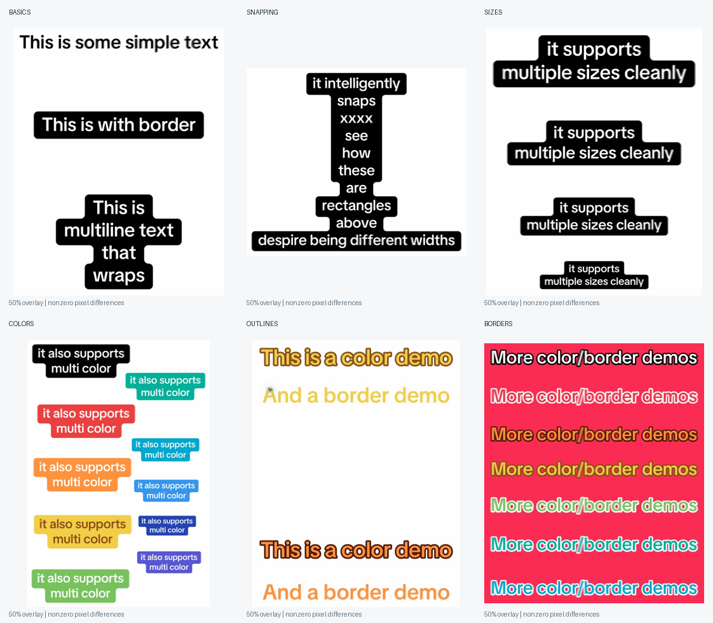

Connected background
A single shape, with rounded steps.
variant="box"Connected backgrounds, intelligent width snapping, and rounded
text outlines. The small details, built into the defaults.
npm install tiktok-style-wrapped-text
Browser component, React wrapper, TypeScript types, and font included. Installation guide →
Change the size. Padding, corner radius, and stroke thickness follow automatically.
Keep the text. Change the treatment. These are live library components, not screenshots.
A single shape, with rounded steps.
variant="box"Just the type. No background or stroke.
variant="plain"Filled letters with a contrasting edge.
variant="outline"The background shows through the type.
variant="hollow"<!-- Import once. Use a dark surface for white plain and hollow text. --> <script type="module" src="./roundtext/roundtext.js"></script> <tiktok-text size="36" color="black" variant="box">Find your<br>happy place.</tiktok-text> <tiktok-text size="36" color="white" variant="plain">Find your<br>happy place.</tiktok-text> <tiktok-text size="36" color="orange" variant="outline">Find your<br>happy place.</tiktok-text> <tiktok-text size="36" color="white" variant="hollow">Find your<br>happy place.</tiktok-text>
Eleven presets include their own background, text, and outline colors. White gets black lettering; yellow gets brown. You can also supply a custom CSS color.
color="black"color="white"color="red"color="orange"color="yellow"color="green"color="teal"color="cyan"color="blue"color="indigo"color="purple"color="#be185d"Light plain text and light strokes need a dark backdrop. These box presets preserve the reference palette, not a blanket accessibility guarantee. For smaller captions, use a high-contrast pair or override --rt-color.
Change just size. Padding, inner and outer corners, and snapping scale together. No separate radius to retune.
size="20"size="28"size="40"size="56"Small differences don’t need a step. Neighboring edges snap together into one clean block. Larger differences keep their rounded silhouette.
snap="off"Every line keeps its own width.
snap="on"Similar widths form a straight block.
Snapping smooths nearby widths; it doesn’t turn every caption into a rectangle.
Align the same text to either edge or the center. Backgrounds still follow the individual lines.
align="left"align="center"align="right"Native DOM ranges supply the actual line breaks and positions. Your text remains selectable and accessible.
Nearby edges are grouped using their original widths. Groups expand to the widest edge, including transitive groups across several lines.
Overlapping line bands form a union. Every outer and inner turn receives a circular corner. Glyph outlines use SVG strokes with round joins.
The demos above show what you can make. These reference tests show how closely the library reproduces the supplied TikTok screenshots. Compare live HTML, overlay the original, inspect pixel differences, and copy the recreation code.

Open reference verificationOriginal · Recreation · Overlay · Difference ↗The comparisons are close, but not pixel-identical. Background overlap and foreground error are reported separately.
Get tiktok-style-wrapped-text on npm. The package includes the browser component, compiled React wrapper, TypeScript declarations, and TikTok Sans with its license.
npm install tiktok-style-wrapped-text
With Vite or another browser bundler, import the package in your browser entry point, then use <tiktok-text> in your HTML.
import 'tiktok-style-wrapped-text';
The module references the bundled font so your bundler can emit it with the rest of your assets. Vite production builds have been checked. For server-rendered apps, register the element on the client or use the React wrapper below.
Download v0.2.0 and place the roundtext folder in your public assets. You can also copy node_modules/tiktok-style-wrapped-text into your public assets and name it roundtext.
<script type="module" src="./roundtext/roundtext.js"></script> <tiktok-text size="48" color="teal">Find your<br>happy place.</tiktok-text>
Keep the fonts folder beside the module. The ZIP also includes all six HTML recreations and verification measurements. Serve over HTTP(S); no build step is needed for plain HTML.
| Attribute | Default | Values |
|---|---|---|
size | 40 | Font size in pixels; geometry scales with it |
color | black | 11 named presets, or a CSS color |
variant | box | box, plain, outline, hollow |
align | center | left, center, right, start, end |
snap="off" disables width snapping. debug shows the line bands. Newlines and <br> work; blank lines remain separate.
Override --rt-bg, --rt-color, --rt-outline, --rt-radius, --rt-stroke, --rt-px, --rt-py, or --rt-snap. Radius, stroke, and snap accept px or em. Use a wrapper for layout padding and borders.
await ready() waits for the included font; then call element.refresh() before capturing. Resizes, text edits, and font loads trigger automatic updates. Call refresh() after external stylesheet changes that do not resize the element.
The roundtext:render event exposes lines, path, rectangles, and unsnapped. The old <round-text> tag remains available with the updated defaults.
Use the same npm package with React 18+. The optional wrapper includes compiled JavaScript and TypeScript declarations. For Next.js App Router, place this code in a client component.
'use client';
import { TikTokText } from 'tiktok-style-wrapped-text/react';
<TikTokText size={48} color="blue" className="max-w-md">
{'This is\nmultiline text'}
</TikTokText>The wrapper handles client registration and forwards a ref. Set width and layout with CSS or Tailwind. The included font and geometry already have defaults.
All six supplied TikTok examples have been recreated in Chrome and checked with overlays and measured pixel differences. The output is not pixel-identical. Font contours, a few pixels of placement, antialiasing, and screenshot color compression account for visible differences. This is a measured reproduction of the supplied style, not TikTok’s internal renderer.
Use one font size per caption; separate captions can be any size. Horizontal text, left/center/right alignment, resizes, and multiline backgrounds are supported. Vertical writing, columns, mixed-size inline elements, rotated measurement, and complex rich-text layouts are outside this version’s scope. Glyph outlines are calibrated to the included font and left-to-right text. Safari and Firefox remain unverified.
Without JavaScript, the text stays visible. Export from a browser capture after the font has loaded. If your capture tool cannot handle Shadow DOM, use an actual browser screenshot.
The included TikTok Sans font is released under the SIL Open Font License. The library’s code is MIT licensed. This library is independent of TikTok. Install with npm install tiktok-style-wrapped-text or download the library folder.